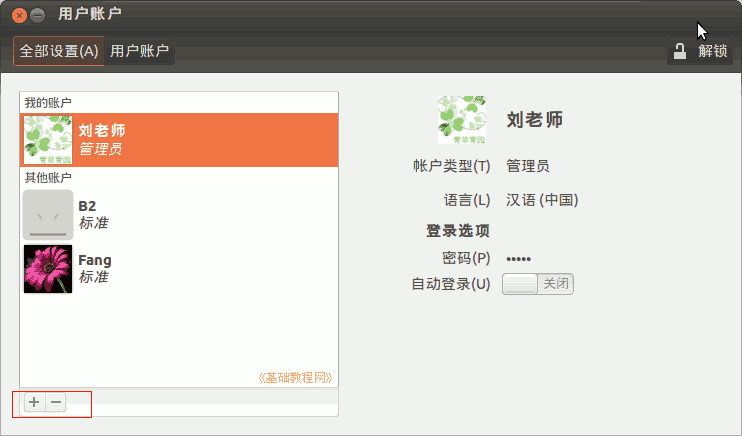

2011-2012 第一学期七年级电脑操作教学设计
作者：TeliuTe 来源：基础教程网
一、认识系统 返回目录 下一课
（一）教学设计
1、学习目标：认识系统
2、注意事项：密码都抄到本子上，严格抄笔记
3、教学过程：
1）教师准备学案和板书；
2）学生整队进入，开机抄黑板上笔记；
3）教师讲解板书演示操作；
4）学生打指法、日志、完成操作；
5）教师打勾记录学生指法成绩，检查日志和操作；
注：学生抄完笔记就开始打指法、日志，老师讲完后再继续完成；
（二）板书设计(学生笔记)
第1课 认识系统
1、开机，关机在右上角
2、登录：b2012b，密码 201272
3、点右上角小人、用户账户...
4、头像、姓名、更改密码
--
操作指南
1、主按钮、l、绿树叶
2、左下角 ctrl+空格键 是中文
3、点关闭、点是、上面输入1、中间点a2012a、下面点保存
4、小键盘灯亮才能用
--
操作图示：

（三）课后记 2012-8-21 19:38
2012-8-20 20:58 新学期开始
--
上周花2天时间，把机房升级到12.04
作服务器的机子没成功，估计还得重装一下
--
fcitx启动要慢个30秒，不知是怎么缘故
把系统的配置文件模板改了一下
--
今天把卫生打扫了一下，机箱擦了一下
一大堆的食品袋，装满一个大纸箱
--
装了个bnes的游戏模拟器
把win下的小游戏移植过来
--
九年级不用带了，只有七八年级
这样也可以省些事，每天要四节课了
--
italc 还是卡的，看来要不要重装一下
把keys再重新装一下，或者把学生端卸载了试试
--
先把座位排一下，人都不是很多
边上的组可以少放些人，中间两组多些
--
登录的时候有点到访客的，这样后面的就没法弄
前面的班忘记检查下，看一下右上角的用户就知道
--
因为没法控制，只好自己操作着边讲
多费了好多口舌，效果也没广播的好
--
汉字有的机子出不来，需要到终端里运行一下
找出这几个来，下回教会自己操作
--
更改字码密码有些难，搞不清“当前密码”是什么意思
有些机子改完就卡住了，先不改了那就
--
下节课学校园网，注册一个账号
这节课做完的自己有的开始注册了
--
改完账户，然后把黑板上的笔记输入到leafpad里了
增加一个操作指南，可以根据情况适当地增减内容
--
保存的步骤有些难，以后要多练习的
这学期还用不上菜单，都是在校园网里练习
--
返回目录 下一课
本教程由86团学校TeliuTe制作|著作权所有
基础教程网：http://teliute.org/
美丽的校园……
转载和引用本站内容，请保留版权信息和本站链接。